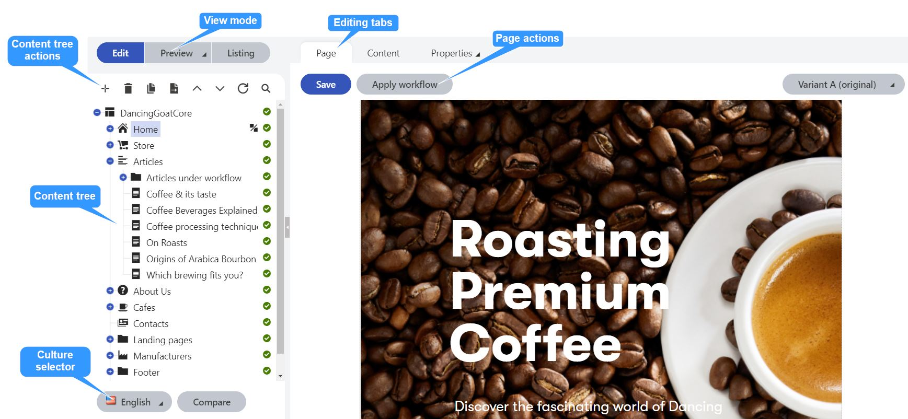
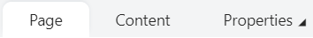
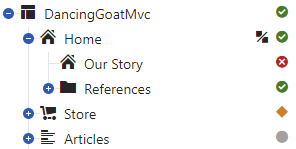

Copy of Working with pages
You can use the Pages application to work with pages in Xperience.

Available view modes
When working with and previewing content in the Pages application, there are three view modes that you can use:
Edit – the default view mode in which you can edit pages. Usually on the Page tab or Content tab.

Preview – displays the latest version of the page. This means that it displays even pages that are not yet published. To display the preview of a page in a new browser tab, expand the Preview mode button (using the expand icon:
 ) and click Open in a new tab. The preview mode also allows you to use built-in page validation features.
) and click Open in a new tab. The preview mode also allows you to use built-in page validation features.
Listing – shows a list of all pages under the currently selected page. You can use the Listing mode to perform multiple (batch) page operations such as deleting, publishing, or translating pages at once.
The following points summarize the difference between the live site and the Preview mode:
The live site and Preview mode display the same content when a page is published and no further changes have been made to it since it was published.
The Preview mode does not use caching, so it may display published changes that are not visible on the live site yet due to caching.
If a page does not use workflow and its Publish from property is set to a future date and time, then the live site does not display any content, while the Preview mode displays the content that will be published after the specified date and time.
If a page uses workflow and has not yet reached the Published step, then the live site does not display any content, while the Preview mode displays the content created in the current workflow step.
If a page uses workflow, is already in the Published workflow step and its workflow cycle has been restarted (i.e. it was switched from the Published/Archived workflow step back to the Edit step and is going through the workflow cycle again), then the live site displays the last published version, while the Preview mode displays content from the current workflow step.
Page status icons
Page status icons indicate the current state of the page. You can see page status icons next to pages in the content tree.

In the following table, you can see what each of the page status icons indicates.
|
Icon |
Description |
|
|
This icon indicates that the page is currently published on the live site by means of configuration of the Publish from and Publish to properties on the page's Content tab. If the page is under workflow, it also needs to be in the Published workflow step for this icon to appear next to it. |
|
|
This icon indicates that the page is not published on the live site. When a page is not under a workflow, the icon indicates that the Publish to property is set to a past date and time. Under a workflow, the icon indicates that the page has not yet been published, i.e. that it has no previously published version. |
|
|
This icon appears next to pages that are scheduled to be published in the future. Without workflow, this happens when the value in the Publish from property on the page's Content tab is set to a future date and time. Under workflow, the same applies, while a page must not have a previously published version (if it has a previously published version, the |
|
|
These two icons appear next to pages under workflow that already have a published version and another version is scheduled to be published. This happens when the new version already is in the Published workflow step and the value in the Publish from property on the page's Content tab is scheduled to a future date and time. In other words, no other work is to be done on the page and the system is only waiting for the set Publish from time before it publishes the page. |
|
|
This icon appears next to pages under workflow that already have a published version and a new version of the page is being created but is not published yet. In other words, the icon is displayed next to pages that already have a previously published version, and are in any workflow step before the Published step. |
|
|
This icon appears next to pages that are archived. Archived pages are no longer visible on the live site, but are still present in the content tree and can be restored when needed. You can archive a page by clicking the Archive button on the Properties -> Workflow tab. |
|
|
This icon indicates that the page is currently checked-out. That means that it is being edited by another user. You cannot edit a page while it is checked out, you have to wait until the user finishes editing and checks the page back in. See Content locking for more details. |
|
|
This icon appears next to pages that are not available in the currently edited culture. |
|
|
This icon appears next to pages that have been submitted to a Translation service and are waiting for the translation to be completed. |
|
|
This icon is displayed next to linked pages. Linked pages only represent a link pointing to another page in the content tree. See Creating linked pages for more details. |
|
|
Displayed next to pages that are currently being A/B tested. Learn more about A/B testing pages. The icon's color indicates the following:
|


 icon is displayed instead).
icon is displayed instead).


Types of pages
Before you start working with pages in Xperience, it is important to know that all the items in the content tree are pages. Even folders that are not actually represented on the live website or data items (such as products) are considered as pages. There are two main types of pages used to hold content.
Structured pages
Structured pages store data within separate fields. The data can be displayed on other pages. You can edit structured page data on the Content tab.
A typical use for structured pages is when you need to display lists of items, such as news, products, and others on a single page. Each of the news or products can have its own fields such as title, main text, and teaser image that you edit.
Pages with page builder
You can create pages of certain pre-configured types and use the page builder feature to edit their content directly in the Xperience Pages application. Page builder is a user-friendly feature which allows users to build pages using configurable widgets prepared by the developers. To decide whether to use the page builder or structured pages, visit Choosing the format of page content.
Performing page-related tasks
You can perform various page-related tasks from dedicated applications, namely:
Checked-out Items – Allows you to manage checked-out pages.
My pages – Allows you to view and edit pages that you created in one place.
Outdated pages – Allows you to view pages based on how long they have been in the system.
Pages – Allows you to work with the site's pages in a hierarchical structure.
Pending pages – Allows you to work with pages that are waiting for your approval.
Recent pages – Allows you to view and edit pages that you recently modified.
Recycle bin – Allows you to restore deleted pages or remove them from the system permanently.
What is a workflow?
Workflow is a sequence of steps that define the life cycle of pages. This ensures the quality of content and design by setting up a reviewing and approval process. In such a process, individual roles and users can work with pages in certain steps of their life cycle (such as Edit, Published, Archived, ...).
An example of a simple workflow process is a website that publishes scientific articles. An author writes an article and sends it for approval to an editor. The editor makes corrections and submits the article to the head of the respective department. The head then publishes the page, thus making it publicly available to read on the website.
Learn how you can work with workflows.